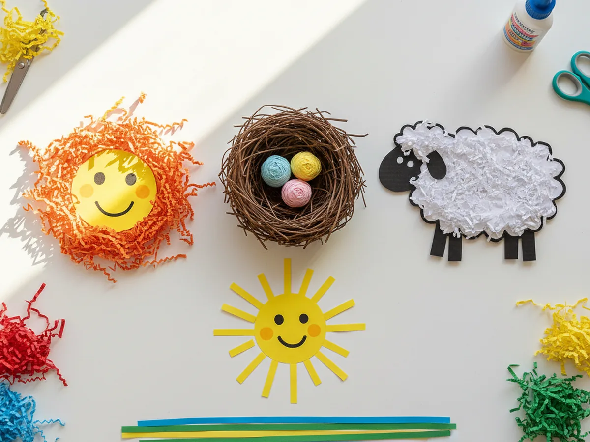
There is something delightful about a pile of soft, curly shredded paper. Kids love how it feels in their hands, and moms love how a few simple supplies can turn into a finished craft that feels textured, fluffy, and a little bit magical. Shredded paper crafts are some of the easiest projects you can pull together at home because the paper itself does most of the visual work. ✂️
This list collects 20 of the sweetest shredded paper crafts for children of all ages. Whether you save the leftovers from your home shredder or grab a colorful pack of crinkle paper, every idea here turns simple shreds into something your child will be proud to keep or give away. Each project is beginner-friendly, low-stress, and uses materials you probably already have on the table. 🎨
What You'll Need
Most of these shredded paper crafts use the same small handful of supplies, so a quick gather of these basics will set you up for the entire list.
- JOYIN Multicolor Crinkle Cut Paper Shred, a 36-ounce rainbow pack ready to use straight from the bag.
- Aurora AS424C Compact Cross-Cut Shredder, a small desktop shredder for making your own colorful shreds from old paper.
- Pacon Construction Paper Assorted Colors, sturdy 12x18 sheets perfect as backgrounds for any of these crafts.
- Aleene's Original Tacky Glue 4 oz 3-Pack, the strong glue that holds shredded paper down without a fight.
- Elmer's Washable School Glue 4 oz 6-Pack, washable and gentle for younger kids who like to spread it themselves.
- Crayola Artista II Washable Tempera Paint Set, a 12-bottle assortment for dyeing white shreds and adding background color.
- Fiskars 5 inch Blunt-Tip Kids Scissors 3-Pack, safe and easy to use for cutting out craft shapes.
- DECORA Self-Adhesive Googly Eyes 800 Pieces, in assorted sizes for adding instant personality to animal projects.
- A shallow tray or shoe box, to keep the shreds contained while crafting.
20 Sweet Shredded Paper Crafts to Make with Your Kids
1. Shredded Paper Bird's Nest
Glue a thick layer of brown shredded paper into a circle on a piece of cardstock to form a cozy little bird's nest. Add three small construction paper egg shapes nestled into the center, or pop in a handprint blue bird with a paper triangle beak. This is one of the most satisfying shredded paper crafts for spring because the texture really does look like real twigs and grass. Younger kids love the squishy feeling of pressing the shreds down into the glue.
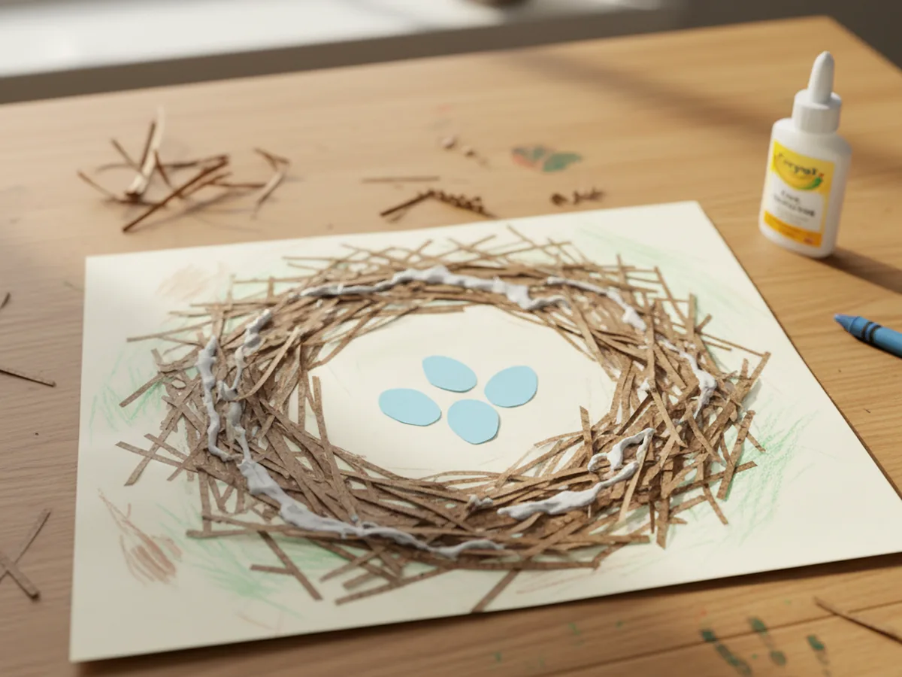
2. Shredded Paper Sensory Bin
Fill a shallow plastic tub with a generous pile of colorful shredded paper and tuck small toys, plastic letters, pom poms, or wooden scoops inside for kids to dig out. The paper crinkles softly under little hands and stays light and easy to clean up at the end. This is one of those shredded paper crafts that doubles as a calm afternoon activity, especially for toddlers who love to scoop, pour, and bury treasures. A handful of paper goes a very long way.
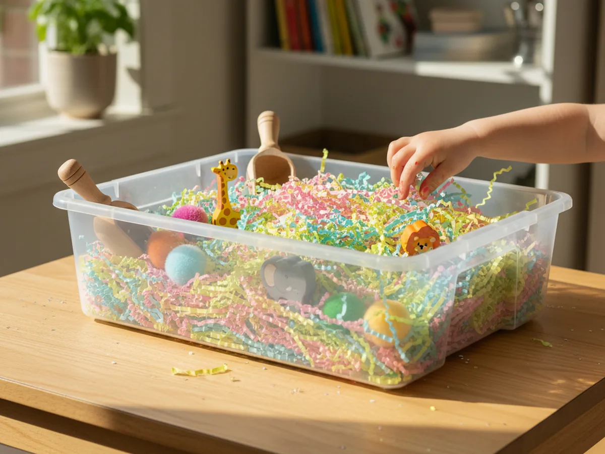
3. Shredded Paper Lion Mane
Cut a round lion face from yellow construction paper, draw on a friendly expression, then glue a thick ring of orange and yellow shredded paper all around the edges to form a wild, fluffy mane. The shreds give the lion the perfect look of a real mane without any fussy cutting. This is one of the most playful shredded paper crafts for kids who love animals and instantly looks impressive when it is finished. Stick a popsicle stick on the back to turn it into a paper plate puppet.
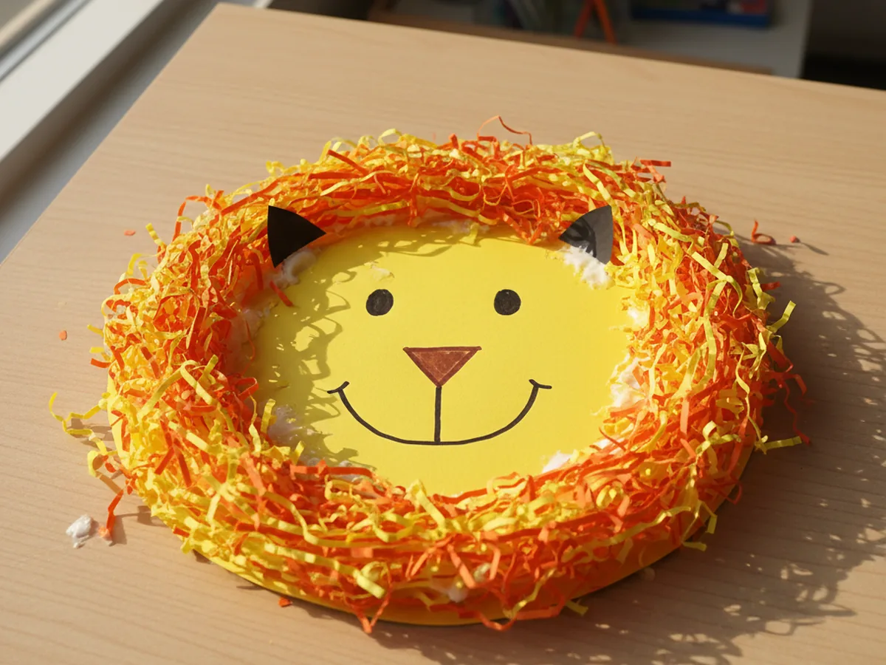
4. Easter Basket Grass Filler
Fluff up a generous handful of green shredded paper to fill the inside of a small paper basket or decorated cup, then tuck in a few cardstock egg cutouts or chocolates on top. The shreds make beautiful basket grass that looks far softer than the plastic version from the store. Kids love arranging their eggs just so on top of the green nest. As far as shredded paper crafts go, this one is festive, useful, and barely takes any time at all.
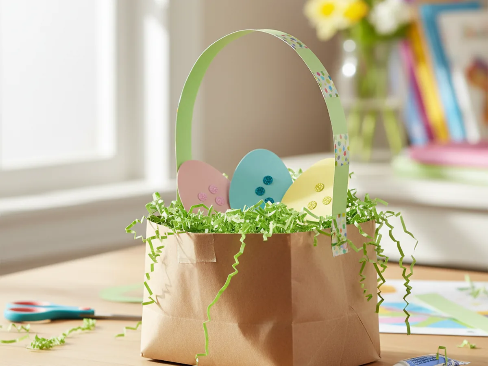
5. Fluffy Paper Sheep
Cut a sheep body shape from black construction paper, draw on a sweet face and four small legs, then cover the whole body with white shredded paper to look like fluffy wool. The paper shreds hang and curl exactly like the soft texture of real sheep's wool. Children adore patting the finished sheep because it really does feel cuddly. This is one of the prettiest shredded paper crafts for spring or for a barnyard-themed afternoon.
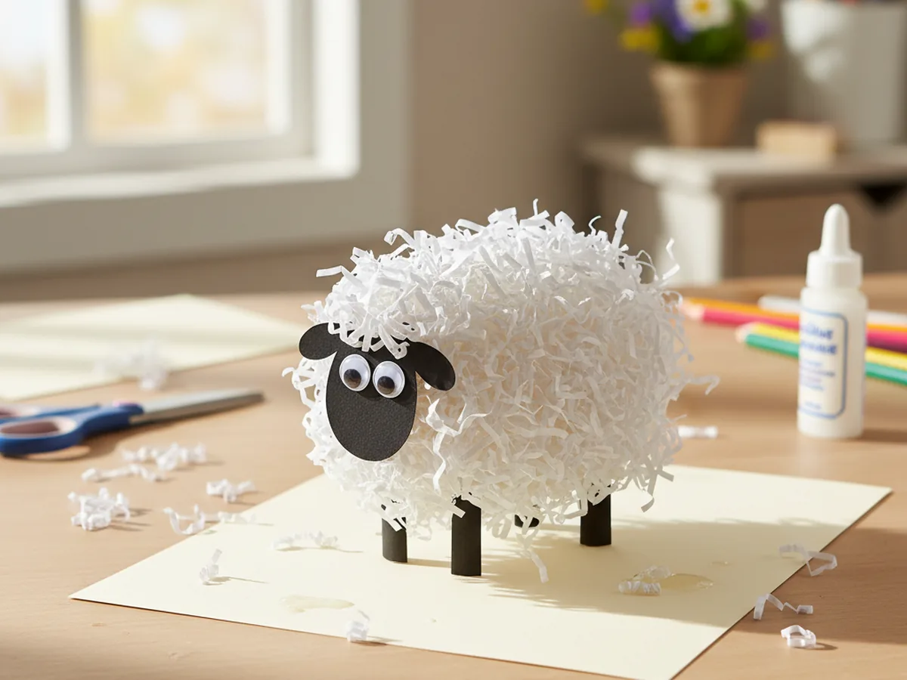
6. Santa Beard Card
Cut a simple round Santa face from pink or beige construction paper, glue on a red triangle hat, two small black dot eyes, and a tiny pink nose, then add a thick puffy beard made from white shredded paper. The shreds give Santa the most wonderfully scruffy beard with almost no effort. This is one of the cutest holiday shredded paper crafts on the list and makes a sweet handmade Christmas card for grandparents. Add a top hat brim of cotton or white paper for extra fluff.
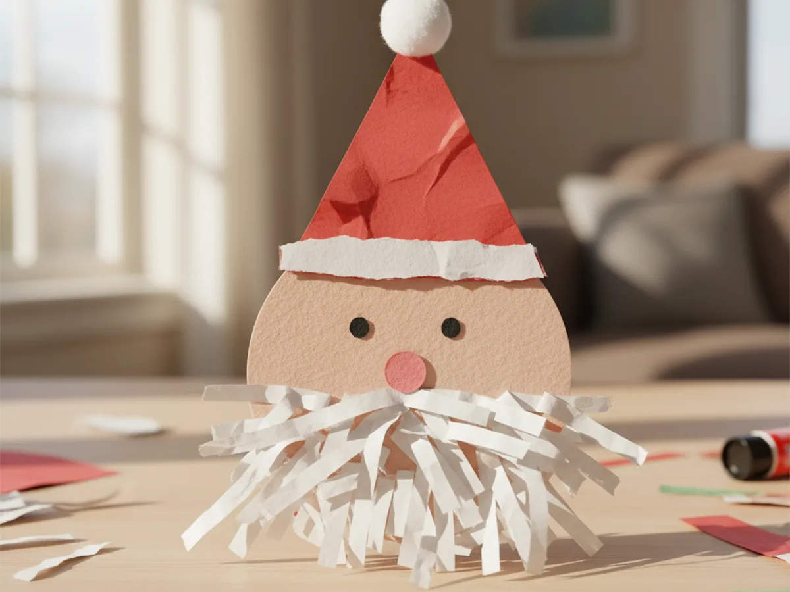
7. Scarecrow with Straw Hair
Glue a circle face cut from tan construction paper to a sheet of background card, draw on a friendly stitched smile and patch eyes, then add yellow shredded paper poking out from under a brown paper hat to look just like straw hair. The shreds curl down over the scarecrow's cheeks the way real straw bursts out of a scarecrow's hat. This is one of the most charming fall shredded paper crafts and works beautifully as a Thanksgiving table decoration.
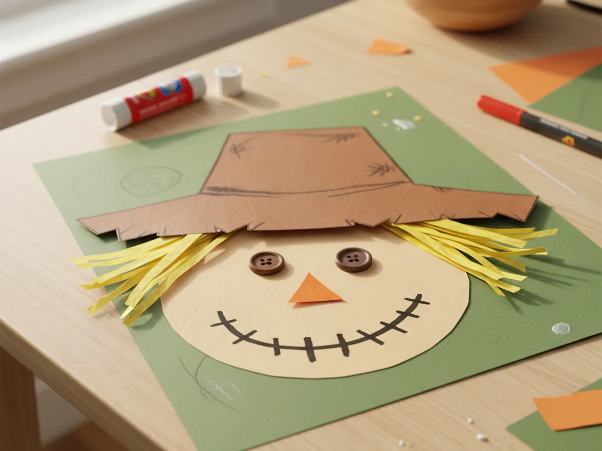
8. Hedgehog Spines
Cut a teardrop hedgehog body from brown cardstock, glue on a small triangle nose, googly eyes, and four little feet, then cover the rounded back with brown and tan shredded paper to look like prickly spines. The contrast between the smooth face and the bristly back makes this craft especially cute. Kids love the texture and the woodland feel. As shredded paper crafts go, this one is endlessly photographable.
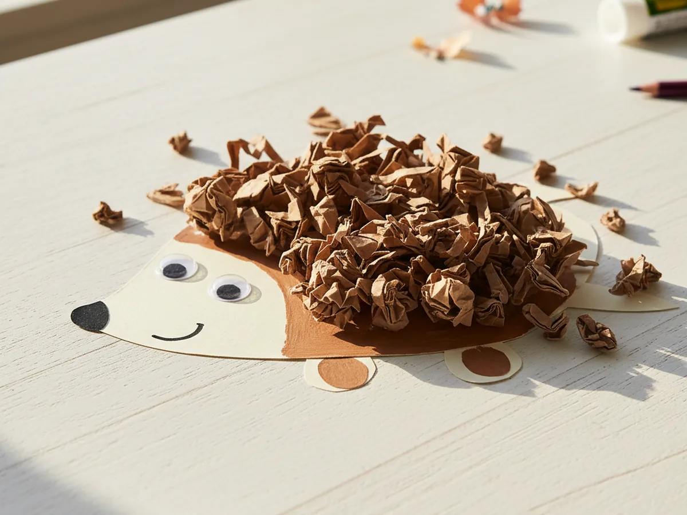
9. Recycled Paper Fireworks
Glue strips of bright shredded paper outward from a single center point on a sheet of dark blue or black cardstock to create a burst of colorful fireworks across the night sky. Add several bursts in different colors so the picture feels like a full Fourth of July show. This is one of the most striking shredded paper crafts on the list and works wonderfully for summer holidays. Kids love arranging the strips so each firework has its own personality.
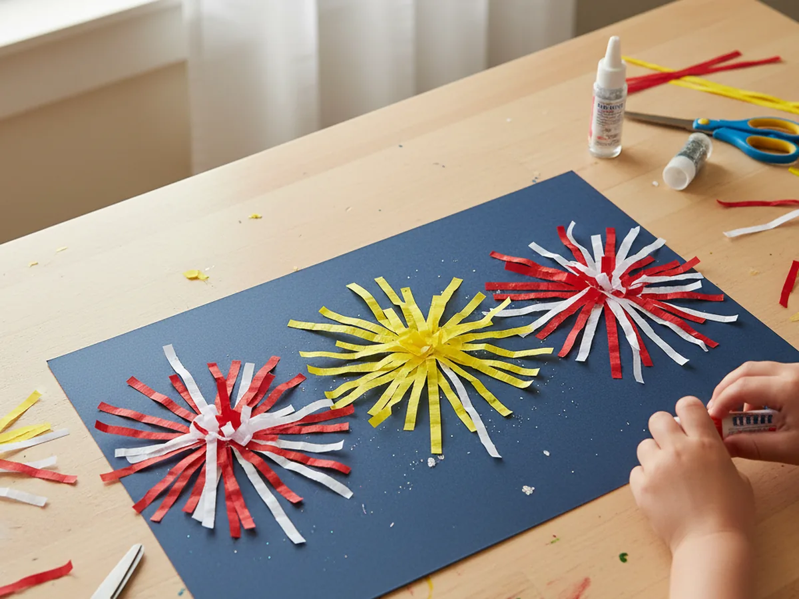
10. Shredded Paper Sun Rays
Cut a big yellow sun circle from cardstock and draw a happy face in the center, then glue a generous fan of yellow and orange shredded paper around the edge to form bright, flowing sun rays. The shreds curl naturally outward in different directions, giving the sun a sense of movement and warmth that flat paper cannot match. This bright and cheerful project is one of the easiest shredded paper crafts for toddlers and preschoolers who are still learning to handle scissors. ☀️
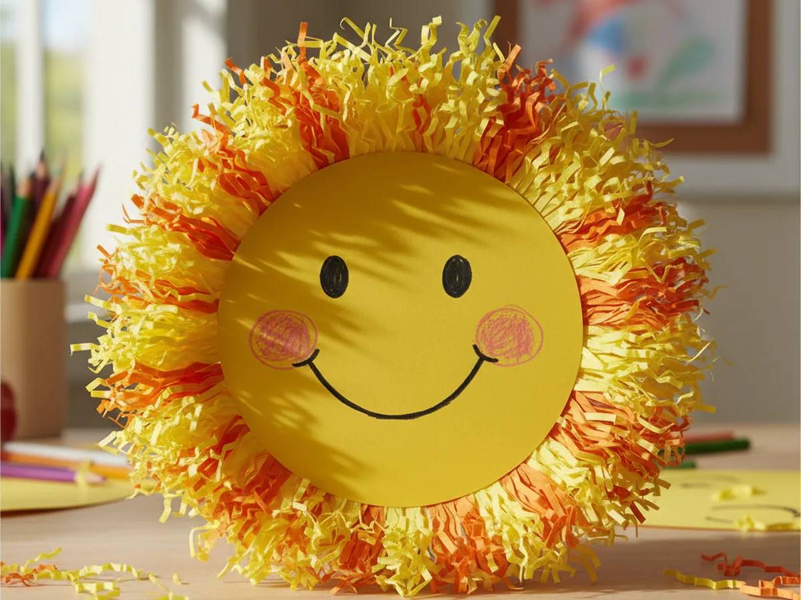
11. Self-Portrait With Real Hair
Draw or cut out a simple oval face on a sheet of construction paper, add eyes, a nose, and a smile, and glue shredded paper on top of the head to match each child's real hair color. Curly, straight, blond, brown, or rainbow shredded paper all work, depending on what you have. Kids find it hilarious to give themselves wild and bouncy hair. This is one of the most personal shredded paper crafts on the list because every single one looks completely different.
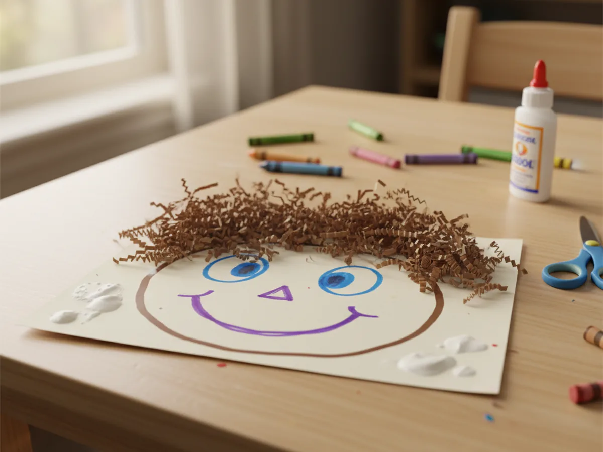
12. Turkey with Shredded Feathers
Cut a round brown turkey body from cardstock and add an orange beak, googly eyes, and a small red wattle. Behind the body, fan out tufts of red, orange, yellow, and brown shredded paper to make rich, ruffled tail feathers. The shreds give the turkey an unmistakable burst of color that flat construction paper feathers simply cannot match. As shredded paper crafts go, this one is the star of any Thanksgiving craft table.
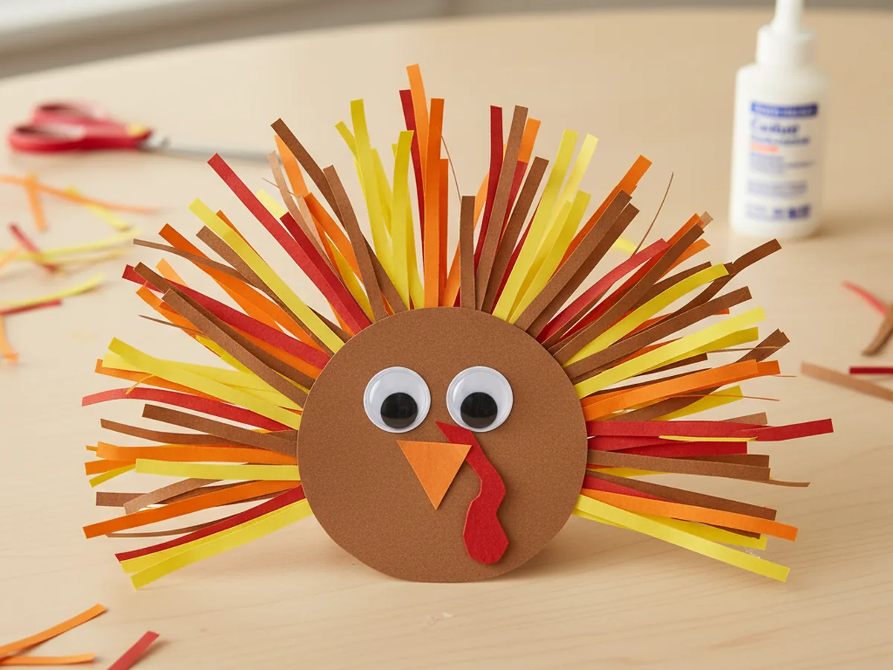
13. Snowman with Snowy Texture
Glue three white shredded paper circles onto blue cardstock to form a fluffy stacked snowman, then add a black paper top hat, a triangle orange nose, button dots, and twig arms. The shreds make the snowman feel three-dimensional and snowy, almost like real snow has been packed into shape. This is one of the coziest winter shredded paper crafts and looks lovely hanging on a windowpane or decorating a holiday card.
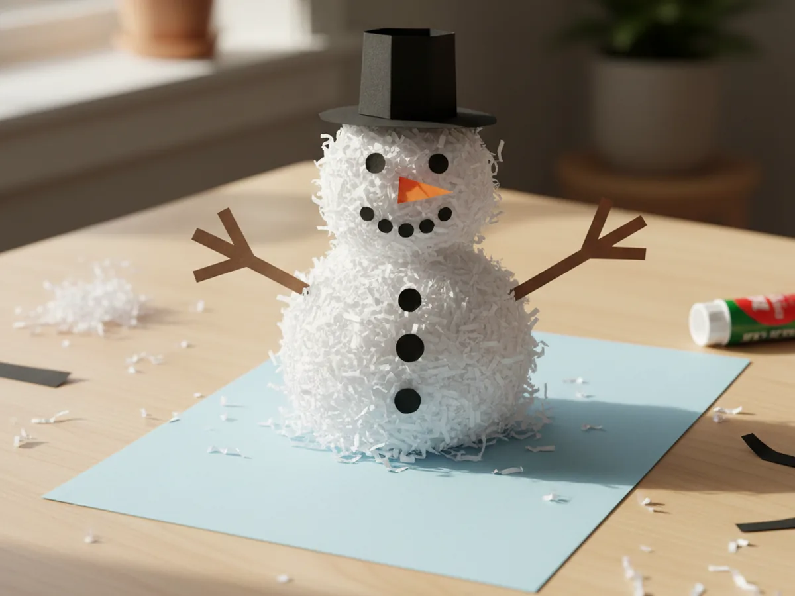
14. Paper Mache Bowl
Mix a simple paste of equal parts flour and water, then layer shredded paper strips dipped in the paste over the outside of an upside-down bowl wrapped in plastic. Let it dry overnight, peel away the bowl, and you have a sweet little paper mache bowl ready to be painted or decorated. This is one of the more involved shredded paper crafts on the list, but the finished bowl is something kids treasure for a long time. Older children especially enjoy how messy and squishy the layering process feels.
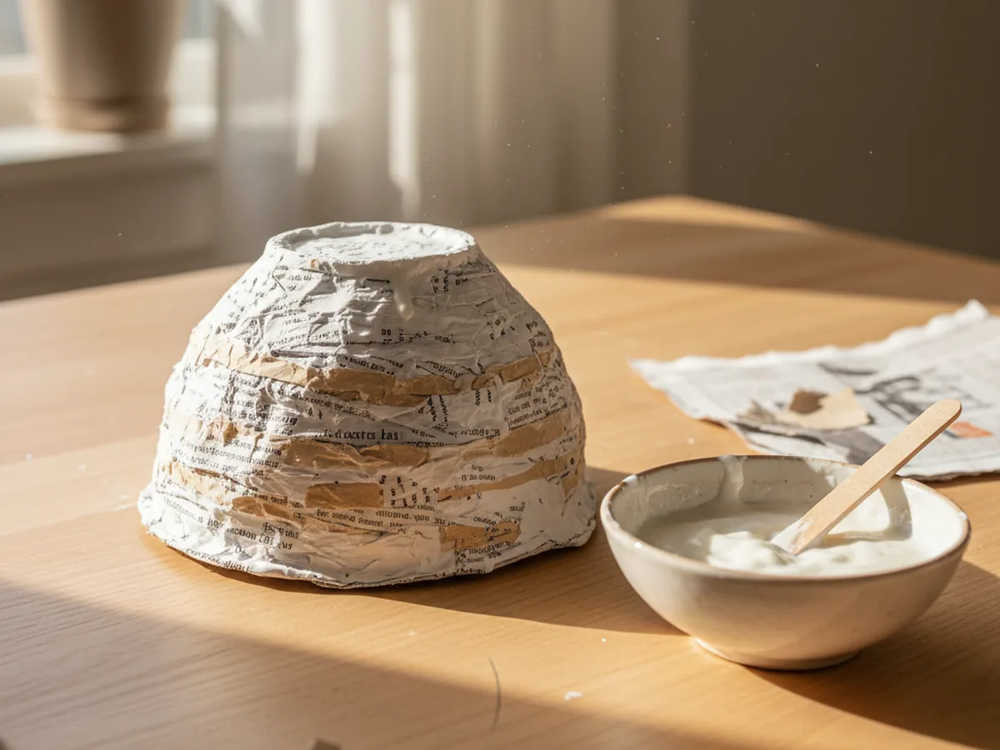
15. Rainbow Shred Strips
Sort small handfuls of red, orange, yellow, green, blue, and purple shredded paper into rainbow color order, then glue each color in a curving stripe across a piece of cardstock to form a fluffy rainbow. Add a white shredded paper cloud at each end and a few raindrops for a complete sky scene. The colors and texture together make this one of the brightest and most cheerful shredded paper crafts in the whole list. 🌈
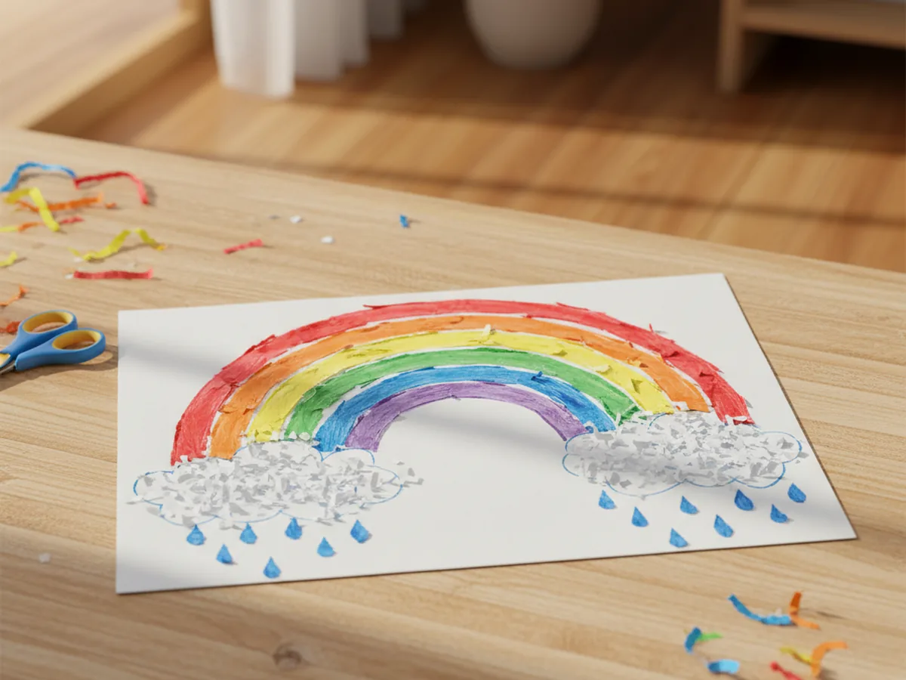
16. Confetti Greeting Card
Fold a sheet of cardstock in half to form a card base, then sprinkle tiny pieces of bright shredded paper across the front and seal them in place with a generous coat of clear-drying liquid glue. The result is a card covered in a sparkling, colorful confetti texture that looks like a celebration. Kids love how the bumpy surface feels under their fingers. This is one of the simplest shredded paper crafts and a wonderful project for birthdays and party invitations.
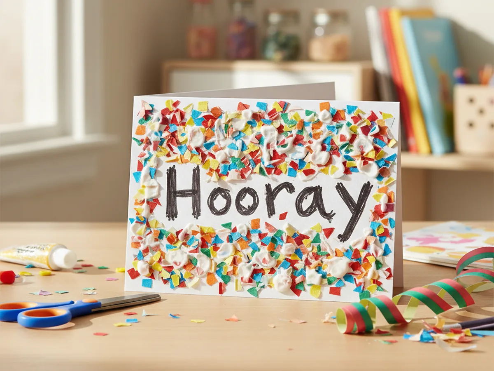
17. Hay Bale Farm Scene
Glue clumps of yellow shredded paper into rounded mound shapes on green cardstock to form little hay bales sitting in a farm field. Add a tiny paper barn, a few cardstock animals, and a bright blue paper sky strip across the top of the page. Children get to build a whole tiny world on one page. As shredded paper crafts go, this one is a gentle introduction to building scenes and tells a sweet little farm story when you are done.
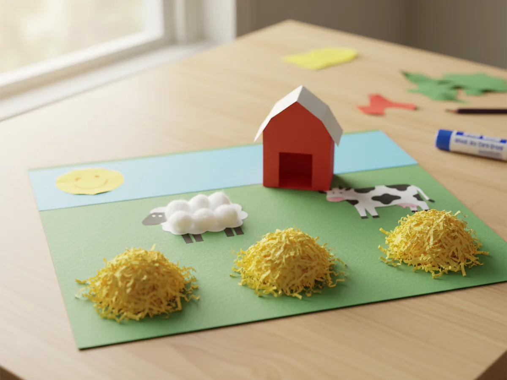
18. Fluffy Paper Dog
Cut a simple cartoon dog body shape from cardstock, glue on a paper face with a black nose and floppy ears, then cover the body and tail with light brown or cream shredded paper to look like fluffy fur. Kids can personalize it to look like the family dog or a fantasy pet of their own. This is one of the most beloved shredded paper crafts for animal-loving children, and the soft texture really makes the dog look ready to be petted. 🐾
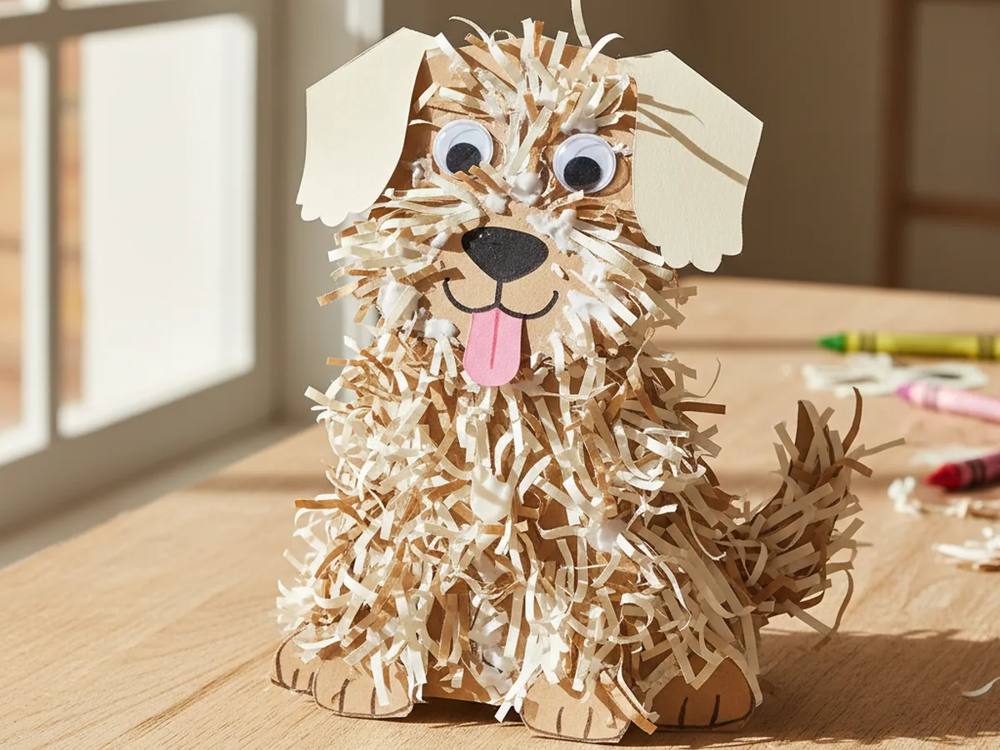
19. Underwater Seaweed Scene
Cover the bottom half of a blue cardstock background with green shredded paper to create swaying ocean seaweed, then add cardstock fish, starfish, and a smiling crab swimming above. The shreds wave gently like real underwater plants and give the picture a dreamy, peaceful feeling. This is one of the most calming shredded paper crafts on the list and works beautifully for ocean-themed days. A sprinkle of sand-colored shreds at the very bottom adds a sweet finishing touch.
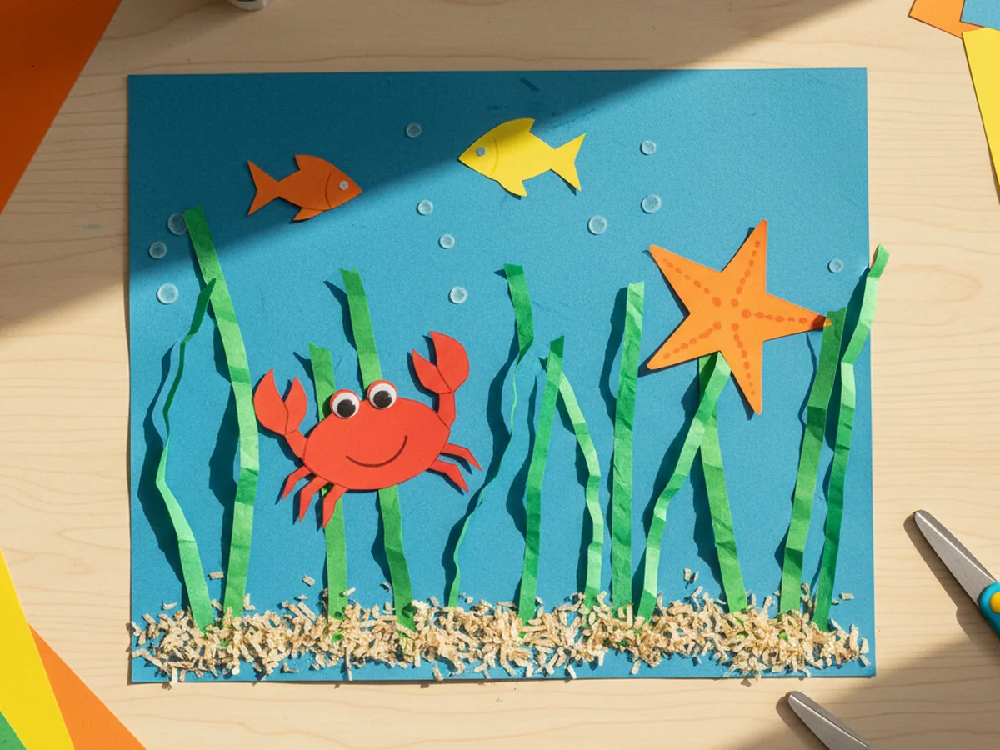
20. Mosaic Heart
Draw a big heart outline on a sheet of cardstock, then fill the inside completely with small clumps of red and pink shredded paper glued in place to form a soft, textured mosaic heart. Older kids can layer in different shades of pink, red, and white for a beautiful gradient effect. The finished heart has a wonderful tactile quality and looks lovely framed or taped to a window. This is one of the sweetest shredded paper crafts for Valentine's Day or Mother's Day.
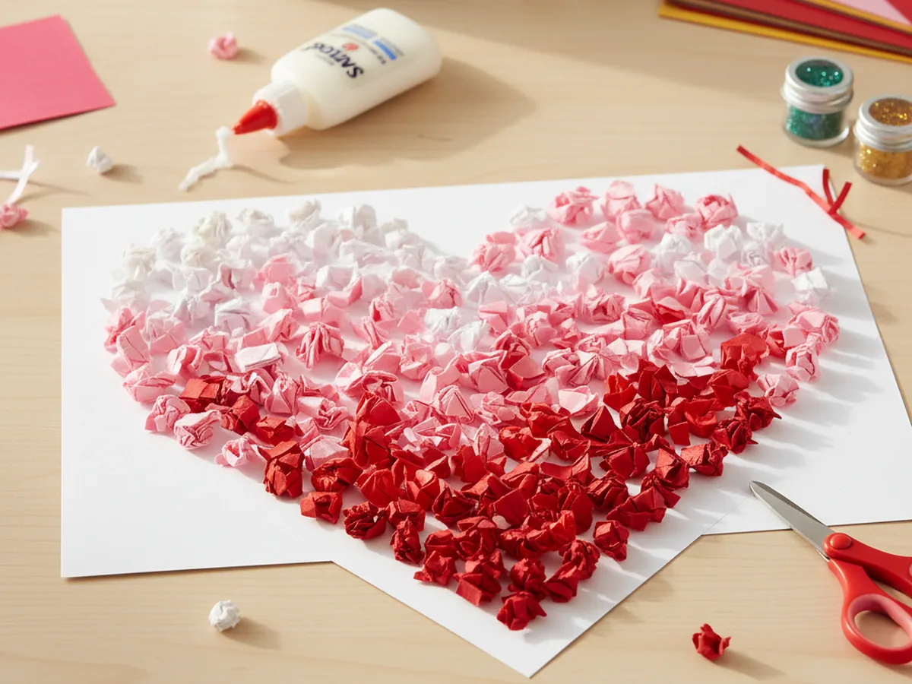
Final Thoughts
One of the best things about shredded paper crafts is that the texture does so much of the work for you. A handful of soft shreds turns a flat paper page into something fluffy, ruffled, and full of character with very little effort. These 20 ideas show just how much joy can come from a humble pile of leftover shreds, from cuddly animals and bright rainbows to seasonal decorations the whole family can love.
Pick one idea that fits the season or your child's mood today, gather your shredded paper and a little glue, and enjoy the time you make together. The finished crafts are sweet, but the soft little moments along the way are the real keepsake.
More Crafts You'll Love
If you enjoyed this list, there are plenty more cozy paper craft ideas waiting for you.
Happy crafting, and enjoy every fluffy moment you make together. 💛